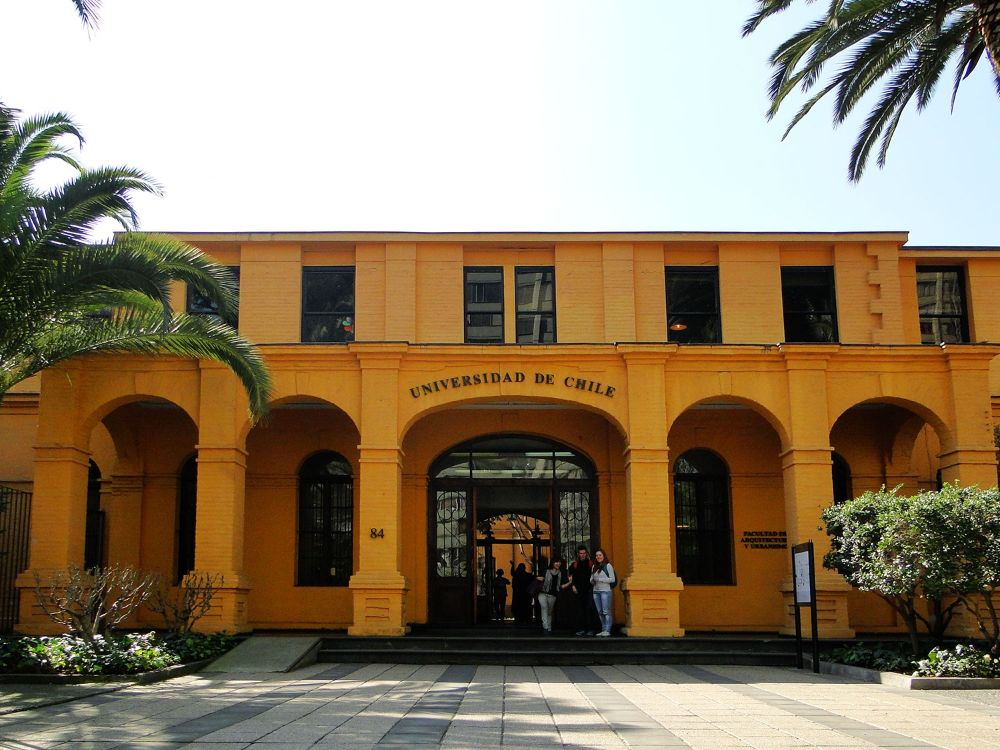
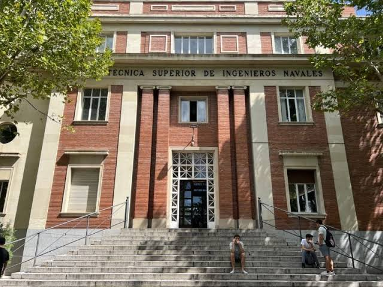

Intercambio
un viaje no tan largo
desde la Universidad de Chile a Polimi
Por Gonzalo Monsalves y Marthin Rivera
13 de noviembre, 2026
Las y los estudiantes de Diseño de la Universidad de Chile contamos con opciones de intercambio a instituciones tan relevantes como el Politecnico di Milano, la UBA, la Universidad de São Paulo, la UNAM y el Tecnológico de Monterrey.
Tales instituciones y la nuestra demuestran su relevancia apareciendo en las métricas del Ranking QS, un sistema londinense que opera en dos vertientes: QS World University Rankings, centrada en el desempeño institucional general, y QS World University Rankings by Subject, que en nuestro caso corresponde a Art and Design. En el panorama de educación superior actual, contar con presencia en ambas vertientes cuenta como ventaja evidente sobre aquellos programas invisibles a las métricas de QS.
A continuación se muestra lo que deberías saber si tu intención es irte de intercambio al Politecnico di Milano.
Diferencia entre universidades de origen y destino
En su versión publicada el 18 de junio de 2026, son las instituciones que cuentan en el Ranking QS para Universidades.
Según tal ranking, un intercambio desde la Universidad de Chile a Politecnico di Milano implica moverse entre los lugares y del mundo.
La diferencia de posiciones se explica cuando se consideran las siguientes dimensiones:
Polimi supera a la U. de Chile en todas las métricas del ranking institucional. La mayor diferencia está en Academic Reputation y Employer Reputation, lo que confirma su estatus como una de las instituciones europeas más prestigiosas.
Diferencia entre escuelas de origen y destino
En su versión publicada el 25 de marzo de 2026, son las instituciones consideradas en el Ranking QS para el área de Arte y Diseño. Según este ranking, un intercambio desde Diseño de la Universidad de Chile a Politecnico di Milano implica moverse entre los lugares y del mundo.
La diferencia de posiciones se explica cuando se consideran las siguientes dimensiones:
En Arte y Diseño, Polimi (puesto #7) y la U. de Chile (rango 101-150) están en ligas completamente distintas. La Employer Reputation de Polimi es especialmente alta, lo que refleja su fuerte vínculo con la industria del diseño italiana.
La escuela de diseño en Milano
El Politecnico di Milano es una universidad técnica fundada en 1863. Su Scuola del Design es una de las más influyentes del mundo, con un enfoque que combina diseño industrial, moda, comunicación y diseño de servicios. Está ubicada en el campus Bovisa, al norte de Milán, una zona industrial reconvertida en polo de innovación.


La Scuola del Design tiene convenios con empresas como Ferrari, Pirelli, Alessi e IBM. Su enfoque es altamente aplicado, lo que contrasta con la formación más teórica de la U. de Chile. Algunas cosas a tener en cuenta:
- El idioma de instrucción es mayoritariamente italiano (aunque hay cursos en inglés).
- Requiere un portafolio de admisión.
- El costo de vida en Milán es alto (~€1.200/mes).
- El convenio FAU cubre la matrícula, no los gastos de manutención.
- El semestre de otoño comienza en septiembre; el de primavera, en febrero.
Cómo postular a un intercambio
Como estudiante de Diseño de la Universidad de Chile, puedes optar por 2 vías para realizar un intercambio internacional presencial:
- Nivel Central (PME): Gestionado de forma central por el Programa de Movilidad Estudiantil de la Dirección de Relaciones Internacionales para toda la universidad.
- Nivel FAU: Gestionado de manera independiente por la oficina de relaciones internacionales de cada unidad académica mediante convenios específicos.
La opción a nivel de FAU puede resultar más conveniente debido a la especificidad de sus convenios, con un enfoque de carácter directamente disciplinar, ajustándose mejor a las asignaturas, áreas de estudio y requerimientos de Diseño.